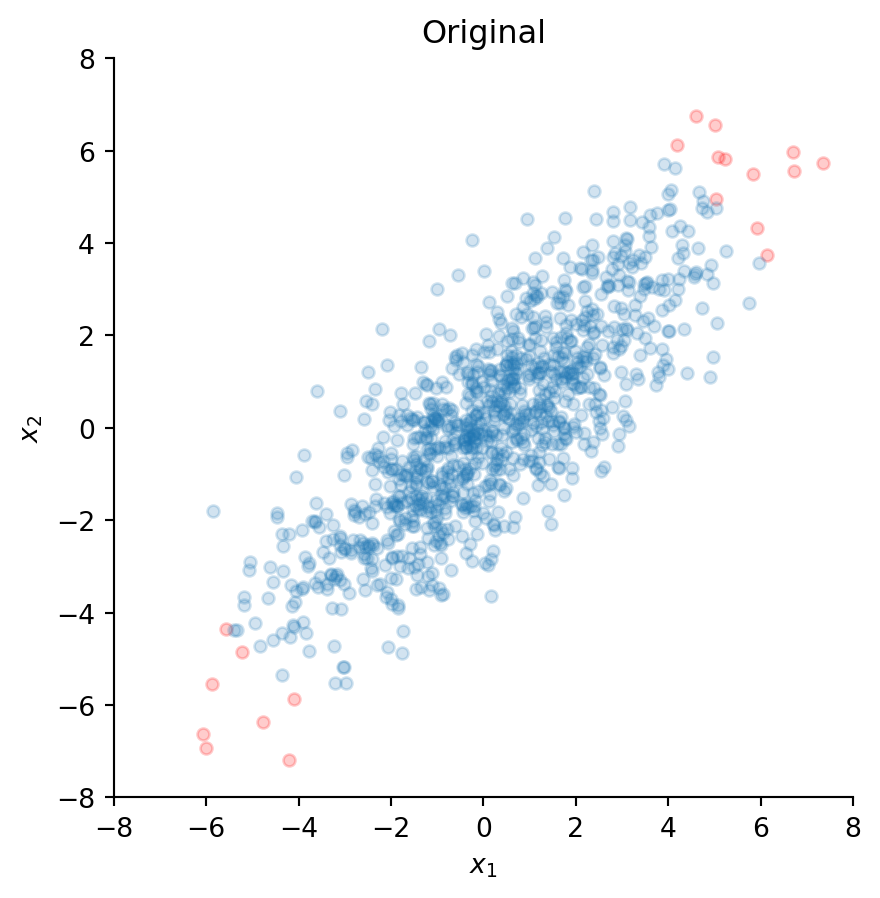
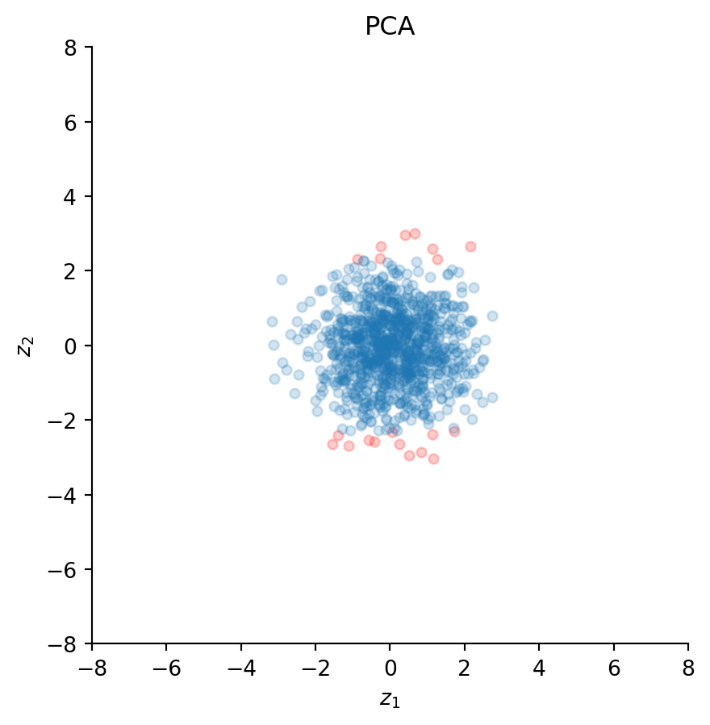

import numpy as np
import matplotlib.pyplot as plt
rng = np.random.default_rng(seed=2)
mu = [0, 0]
sigma = [[5, 4], [4, 5]] # must be positive semi-definite
n = 1000
x = rng.multivariate_normal(mu, sigma, size=n).TWhitening with PCA and ZCA
Python
EEG
ICA
Whitening (or sphering) is an important preprocessing step prior to performing independent component analysis (ICA) on EEG/MEG data. In this post, I explain the intuition behind whitening and illustrate the difference between two popular whitening methods – PCA (principal component analysis) and ZCA (zero-phase component analysis).
Introduction
Whitening (also known as sphering) is a linear transformation used for decorrelating signals. Applied to EEG, this means that the original channel time series (which tend to be highly correlated) are transformed into uncorrelated signals with identical variances. The term whitening is derived from white noise (which in turn draws its name from white light), which consists of serially uncorrelated samples. Whitening thus transforms a random vector into a white noise vector with uncorrelated components.
Theoretically, there are infinitely many possibilities to perform a whitening transformation. We will explore two popular whitening methods in more detail, namely principal component analysis (PCA) and zero-phase component analysis (ZCA), which was introduced by Bell and Sejnowski (1997). These methods are commonly used in EEG/MEG analysis as a preprocessing step prior to independent component analysis (ICA) (see this post on how to remove ocular artifacts with ICA). If you want to delve into the matter more deeply, Kessy et al. (2018) discuss even more possible whitening methods.
Mathematically, whitening takes a random vector \(\mathbf{x}\) (the original EEG channel time series) and transforms it into a random vector \(\mathbf{z}\) using a whitening matrix \(\mathbf{W}\):
\[\mathbf{z} = \mathbf{W} \mathbf{x}\]
Importantly, the original covariance matrix \(\text{cov}(\mathbf{x}) = \mathbf{\Sigma}\) becomes \(\text{cov}(\mathbf{z}) = \mathbf{I}\) after the transformation – the identity matrix. This means that all components of \(\mathbf{z}\) have unit variance and all correlations have been removed.
Toy data
To illustrate the differences between PCA and ZCA whitening, let’s create some toy data. Specifically, we generate 1000 samples of two correlated time series \(x_1\) and \(x_2\).
The two time series are stored in the NumPy array x of shape (2, 1000).
For visualization purposes that will become clear in a moment, we determine the 20 most extreme values and denote their indices as set1 (the indices of the remaining data points are labeled set2):
set1 = np.argsort(np.linalg.norm(x, axis=0))[-20:]
set2 = list(set(range(n)) - set(set1))Let’s now plot all values of \(x_1\) versus their corresponding values of \(x_2\).
fig, ax = plt.subplots()
ax.scatter(x[0, set1], x[1, set1], s=20, c="red", alpha=0.2)
ax.scatter(x[0, set2], x[1, set2], s=20, alpha=0.2)
ax.set_aspect("equal")
ax.set_xlim(-8, 8)
ax.set_ylim(-8, 8)
ax.set_xlabel("$x_1$")
ax.set_ylabel("$x_2$")
ax.spines["top"].set_visible(False)
ax.spines["right"].set_visible(False)
ax.set_title("Original")
Clearly, these two time series appear to be highly correlated. The tilted ellipsoidal shape of the scatter plot indicates that as the values of \(x_1\) increase, the values of \(x_2\) also tend to increase. Indeed, the Pearson correlation between \(x_1\) and \(x_2\) is 0.80 and can be computed with:
np.corrcoef(x)[0, 1]np.float64(0.8108740736106009)The red dots indicate the most extreme values, and we will observe how these points are transformed by the subsequent whitening procedures.
Eigendecomposition
Both PCA and ZCA are based on eigenvectors and eigenvalues of the (empirical) covariance matrix. In particular, the covariance matrix can be decomposed into its eigenvectors \(\mathbf{U}\) and eigenvalues \(\mathbf{\Lambda}\) as:
\[\mathbf{\Sigma} = \mathbf{U} \mathbf{\Lambda} \mathbf{U}^T\]
Let’s compute these quantities for our toy data:
sigma = np.cov(x)
evals, evecs = np.linalg.eigh(sigma)Note that we use the empirical covariance matrix derived from the data instead of the true covariance matrix, which is generally unknown. Furthermore, because a covariance matrix is always symmetric, we can use the optimized np.linalg.eigh() function instead of the more generic np.linalg.eig() version (this also makes sure that we will always get real eigenvalues instead of complex ones). Alternatively, we could also use np.linalg.svd() directly on the data x (instead of the covariance matrix) to compute the eigenvectors and eigenvalues, which can be numerically more stable in some situations.
Whitening with PCA
The whitening matrix \(\mathbf{W}^{\mathrm{PCA}}\) for PCA can be written as:
\[\mathbf{W}^{\mathrm{PCA}} = \mathbf{\Lambda}^{-\frac{1}{2}} \mathbf{U}^T\]
This means that the data can be transformed as follows:
\[\mathbf{z} = \mathbf{W}^{\mathrm{PCA}} \mathbf{x} = \mathbf{\Lambda}^{-\frac{1}{2}} \mathbf{U}^T \mathbf{x}\]
Therefore, we can whiten our toy data accordingly:
z = np.diag(evals**(-1/2)) @ evecs.T @ xLet’s see how our transformed toy data looks in a scatter plot:
fig, ax = plt.subplots()
ax.scatter(z[0, set1], z[1, set1], s=20, c="red", alpha=0.2)
ax.scatter(z[0, set2], z[1, set2], s=20, alpha=0.2)
ax.set_aspect("equal")
ax.set_xlim(-8, 8)
ax.set_ylim(-8, 8)
ax.set_xlabel("$z_1$")
ax.set_ylabel("$z_2$")
ax.spines["top"].set_visible(False)
ax.spines["right"].set_visible(False)
ax.set_title("PCA")
Clearly, the transformation removed the correlation between the two time series, because the scatter plot now looks like a sphere (a circle in two dimensions) – hence the name sphering. Indeed, the correlation coefficient yields a value practically equal to zero:
np.corrcoef(z)[0, 1]np.float64(-4.997670612351674e-16)Importantly, PCA has rotated all data points as illustrated by the new positions of the red dots; these do not lie on a diagonal with roughly 45 degrees anymore, but are now aligned with the vertical axis.
Whitening with ZCA
The whitening matrix \(\mathbf{W}^{\mathrm{ZCA}}\) for ZCA can be written as:
\[\mathbf{W}^{\mathrm{ZCA}} = \mathbf{U} \mathbf{\Lambda}^{-\frac{1}{2}} \mathbf{U}^T\]
In fact, this transformation looks almost like PCA whitening, but with an additional rotation by \(\mathbf{U}\). Again, the original data can be transformed as follows:
\[\mathbf{z} = \mathbf{W}^{\mathrm{ZCA}} \mathbf{x} = \mathbf{U} \mathbf{\Lambda}^{-\frac{1}{2}} \mathbf{U}^T \mathbf{x}\]
We whiten our data accordingly and take a look at the resulting scatter plot:
z = evecs @ np.diag(evals**(-1/2)) @ evecs.T @ xfig, ax = plt.subplots()
ax.scatter(z[0, set1], z[1, set1], s=20, c="red", alpha=0.2)
ax.scatter(z[0, set2], z[1, set2], s=20, alpha=0.2)
ax.set_aspect("equal")
ax.set_xlim(-8, 8)
ax.set_ylim(-8, 8)
ax.set_xlabel("$z_1$")
ax.set_ylabel("$z_2$")
ax.spines["top"].set_visible(False)
ax.spines["right"].set_visible(False)
ax.set_title("ZCA")Again, ZCA has decorrelated the data because the scatter plot looks spherical; the correlation is again practically zero:
np.corrcoef(z)[0, 1]np.float64(-1.5772057222702893e-15)However, and in contrast to PCA, ZCA has preserved the orientation of the original data points. This can be observed from the positions of the red dots, which are aligned along the same direction as the original data. This property has given this whitening transformation its name “zero-phase”, because it minimally distorts the original phase (i.e. orientation) of the data.
Conclusions
Both PCA and ZCA whiten the original data, but they perform different rotations. It can be shown that PCA is optimal if the goal is compression of the original data (because principal components are sorted according to their explained variance), whereas ZCA is optimal if the goal is to keep the transformed random vector as similar as possible to the original one (thus ZCA cannot be used to compress the data). Kessy et al. (2018) provide mathematical proofs of these propositions.
It is worth mentioning that standardizing the data prior to whitening might sometimes be useful, especially if the individual signals are on different scales. Usually, standardization is not necessary if all signals are EEG signals, but if a combination of EEG and MEG signals simultaneously enter the analysis, all data should be rescaled to avoid biasing the whitening transformation to signals with higher variance.
ICA algorithms are typically kick-started from whitened data. An article by Montoya-Martínez et al. (2017) suggests that some ICA variants can be sensitive to the choice of the initial whitening procedure. Specifically, it can make a difference whether PCA or ZCA is used prior to performing Extended Infomax as implemented in MNE or EEGLAB. The reason seems to be the slow convergence of this particular ICA algorithm. Picard (Ablin et al., 2018) improves upon this implementation and provides much faster convergence for both Extended Infomax and FastICA variants. Therefore, it should be rather insensitive to the choice of the particular whitening procedure.
Finally, regarding the common practice of reducing dimensionality with PCA prior to ICA, an article by Artoni et al. (2018) argues that pruning principal components might adversely affect the quality of the resulting independent components. This means that if PCA is used to whiten the data, all components should be retained (i.e. the data should not be compressed).
Acknowledgments
I’d like to thank Pierre Ablin for his very helpful comments on an earlier version of this post.
Code
Code
import numpy as np
import matplotlib.pyplot as plt
# generate toy data
rng = np.random.default_rng(seed=2)
mu = [0, 0]
sigma = [[5, 4], [4, 5]] # must be positive semi-definite
n = 1000
x = rng.multivariate_normal(mu, sigma, size=n).T
# store 20 most extreme values for visualization
set1 = np.argsort(np.linalg.norm(x, axis=0))[-20:]
set2 = list(set(range(n)) - set(set1))
# plot original data
fig, ax = plt.subplots()
ax.scatter(x[0, set1], x[1, set1], s=20, c="red", alpha=0.2)
ax.scatter(x[0, set2], x[1, set2], s=20, alpha=0.2)
ax.set_aspect("equal")
ax.set_xlim(-8, 8)
ax.set_ylim(-8, 8)
ax.set_xlabel("$x_1$")
ax.set_ylabel("$x_2$")
ax.spines["top"].set_visible(False)
ax.spines["right"].set_visible(False)
ax.set_title("Original")
np.corrcoef(x)[0, 1]
sigma = np.cov(x)
evals, evecs = np.linalg.eigh(sigma)
# PCA
z = np.diag(evals**(-1/2)) @ evecs.T @ x
fig, ax = plt.subplots()
ax.scatter(z[0, set1], z[1, set1], s=20, c="red", alpha=0.2)
ax.scatter(z[0, set2], z[1, set2], s=20, alpha=0.2)
ax.set_aspect("equal")
ax.set_xlim(-8, 8)
ax.set_ylim(-8, 8)
ax.set_xlabel("$z_1$")
ax.set_ylabel("$z_2$")
ax.spines["top"].set_visible(False)
ax.spines["right"].set_visible(False)
ax.set_title("PCA")
np.corrcoef(z)[0, 1]
# ZCA
z = evecs @ np.diag(evals**(-1/2)) @ evecs.T @ x
fig, ax = plt.subplots()
ax.scatter(z[0, set1], z[1, set1], s=20, c="red", alpha=0.2)
ax.scatter(z[0, set2], z[1, set2], s=20, alpha=0.2)
ax.set_aspect("equal")
ax.set_xlim(-8, 8)
ax.set_ylim(-8, 8)
ax.set_xlabel("$z_1$")
ax.set_ylabel("$z_2$")
ax.spines["top"].set_visible(False)
ax.spines["right"].set_visible(False)
ax.set_title("ZCA")
np.corrcoef(z)[0, 1]